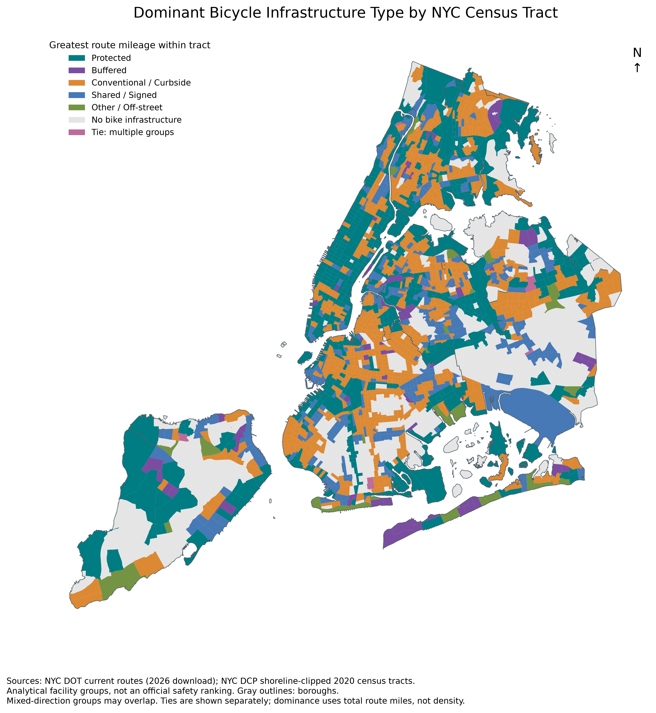

Bicycle infrastructure types and neighborhood income
Analytical groups, not an official NYC DOT safety ranking. Original protected-lane figures
Access to Bicycle Infrastructure Types by NYC Income Quartile

Bicycle Infrastructure Type and Neighborhood Income

Dominant Bicycle Infrastructure Type by NYC Census Tract
